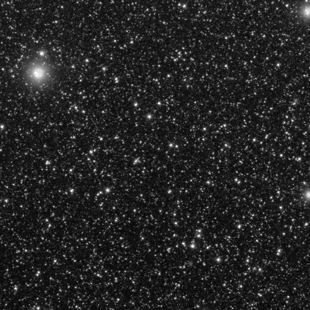
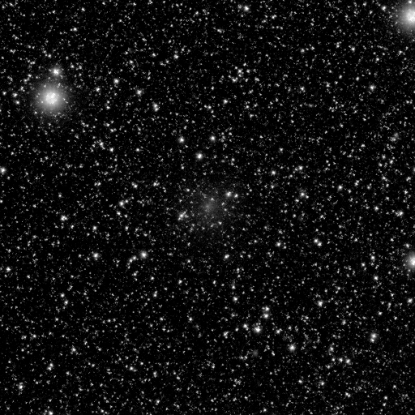
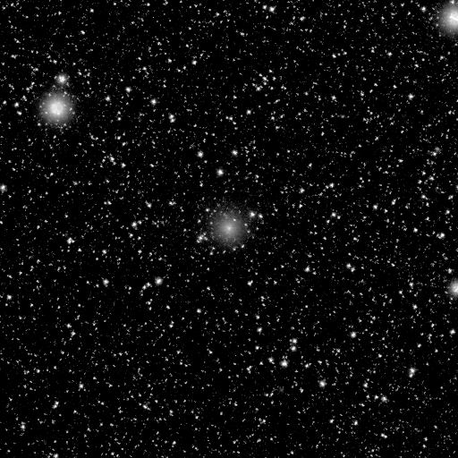

TWO PHOTOS OF THE SAME SKY. WHAT CHANGED?
Pick a place in the sky that SPHEREx has photographed. This page flips between NASA’s photos of it, taken months apart in the same kind of infrared light, so you can see what moved, brightened or appeared.
- Type a star’s name or a place in the sky, or pick one of the targets below.
- Two photos of it, taken months apart at the same colour, flip back and forth.
- What jumps out may have moved, brightened or appeared. It is worth a closer look: the “Is it real?” panel checks the usual false alarms.
Or try the five targets, or the comet
- EPSILON INDI B two brown dwarfs drifting across the sky
- BARNARD’S STAR the fastest-moving star in the sky
- WISE 0855 the coldest brown dwarf known
- RW AURIGAE a young star that dims irregularly
- R DRACONIS a red giant, too bright to measure
- COMET LEMMON a comet that glows at the colour of carbon dioxide
- Colour
- Infrared is light our eyes cannot see. SPHEREx takes each photo in one of 102 narrow kinds of it, by wavelength. This page calls each kind a colour and shows every photo in grey.
- Blink
- To flip back and forth between two photos of the same place, so that what changed jumps out. In 1930 Clyde Tombaugh found Pluto at Lowell Observatory by blinking photographic plates of one patch of sky. Two SPHEREx photos of a patch can be at different colours, so a plain blink can show changes that never happened; this page matches the colour first.

NOTHING HERE
- Taken 10 August 2025
- Infrared colour 4.273 µm
- The colour of carbon dioxide

COMET LEMMON
- Taken 26 February 2026
- Infrared colour 4.266 µm
- The colour of carbon dioxide
The record 26 checks; for every one that can pass or fail, the rule was written before its run: 4 failed, 4 are limits, 1 was corrected. Read every one
TESTED ON THE CHALLENGE’S FIVE TARGETS
| Target | What was found | Catalogue |
|---|---|---|
| Epsilon Indi B | Moved 74.3 arcseconds since 2010 | 73.9 arcseconds |
| Barnard’s Star | Moved 163.7 arcseconds since 2010 | 163.8 arcseconds |
| WISE 0855 | Moved 128.1 arcseconds since 2010 | 128.6 arcseconds |
| RW Aurigae | Changed by +36.0 % and +28.2 % in two bands | |
| R Draconis | Too bright to measure: saturated in 412 of 412 photos | |
This answers the challenge “Planet X and SPHEREx”, 2026 NASA Space Apps Challenge.
WHAT THE CHALLENGE ASKS, AND WHERE IT IS ANSWERED
- A public web tool that shows images of the sky from SPHEREx. Built See it: A public web tool that shows images of the sky from SPHEREx.
- A visitor enters the coordinates of a patch of sky, right ascension and declination. Built See it: A visitor enters the coordinates of a patch of sky, right ascension and declination.
- The tool shows a series of images of that patch like a little video, so that moving objects are easy to spot. Partly built See it: The tool shows a series of images of that patch like a little video, so that moving objects are easy to spot.
- The tool is tried on Barnard’s Star, Epsilon Indi B, WISE 0855, RW Aurigae and R Draconis. Built See it: The tool is tried on Barnard’s Star, Epsilon Indi B, WISE 0855, RW Aurigae and R Draconis.
- The tool is easy to update when new data arrive. Partly built
- The infrared colours are shown in a way that helps visitors use them. Built See it: The infrared colours are shown in a way that helps visitors use them.
- The data of each of the six detectors are added together to make faint things easier to see. Partly built See it: The data of each of the six detectors are added together to make faint things easier to see.
- Spectra are drawn on the fly. Built See it: Spectra are drawn on the fly.
- Visitors can add or subtract images taken at different times. Partly built See it: Visitors can add or subtract images taken at different times.
- Visitors choose the field of view. Not built
- Data from other telescopes, such as Gaia and WISE, are drawn over the images. Partly built See it: Data from other telescopes, such as Gaia and WISE, are drawn over the images.
- Coordinates in the address let others link to a view or embed it. Built See it: Coordinates in the address let others link to a view or embed it.
- Metadata such as contamination flags is shown. Built See it: Metadata such as contamination flags is shown.
- Public tools such as Astropy and Aladin are used or offered. Built See it: Public tools such as Astropy and Aladin are used or offered.
- Anyone can quickly see how the sky changes over time. Partly built See it: Anyone can quickly see how the sky changes over time.
- The data and resources that the challenge lists are used. Partly built See it: The data and resources that the challenge lists are used.
- The tool helps volunteers who look for moving objects, as Backyard Worlds does. Partly built See it: The tool helps volunteers who look for moving objects, as Backyard Worlds does.
Marked as on the Checks page. The same list, with a note on each line
ONE NIGHT, FOUR COLOURS
On 26 February 2026 SPHEREx photographed the comet four times within a few minutes, each time at another infrared colour. The sky and the telescope are the same, so the main difference between the photos is the colour. At the colour of carbon dioxide the comet is about 16 times brighter than at the nearest colours outside the band of carbon dioxide: the photo at 4.193 µm that night, and one from the night before.
A colour here is a wavelength of infrared light, in micrometres (µm). Carbon dioxide gas gives off light between 4.20 and 4.32 µm. Our air blocks that light, so it takes a telescope in space to see it. Brightness is in millijanskys (mJy), measured inside a small circle on the marked spot; the glow is wider than the circle, so the comet’s true values are higher. How we know
Taken 26 February 2026: comet C/2025 A6 (Lemmon), four photos within a few minutes. Check K2
Infrared colour of each photo, in micrometres
Where carbon dioxide glows
-
4.193 µm

- Taken
- Brightness 14.1 mJy
-
4.229 µm

- Taken
- Brightness 136.2 mJy
-
4.266 µm
- Taken
- Brightness 263.2 mJy
-
4.302 µm
- Taken
- Brightness 71.7 mJy
A PLAIN BLINK LIES
To blink is to flip between two photos of one patch of sky. With SPHEREx that can mislead. Its filter changes colour steadily from one edge of the camera to the other, so the colour of a photo depends on where a star happens to land. Photograph a steady star twice and it is recorded at two colours, and at a different brightness in each. Blink those two photos and the star seems to change. It has not.
Match the colour before you compare. Shown on the field of RW Aurigae, a star known to vary; measured on 20, 12 and 14 steady stars beside it, one count for each of the three ways below. Check K7
Three ways to pick the photos, and how far steady stars seem to swing (brightest reading over faintest)
- All photos of one visit, in time order A visit is one pass of the telescope over a patch of sky, spread over days. Every photo of it is at a different colour. × 11.8
- One detector only One of the camera’s six sensors: a narrower range of colours. × 2.18
- Same colour Two photos matched in colour, months apart: what this tool blinks. × 1.02
× 11.8 means that across these photos a steady star’s brightest reading is 11.8 times its faintest: the middle value of the 20 steady stars beside RW Aurigae. The three figures do not compare the same photos: the first runs through all 112 photos of a visit, the last compares two. × 1 would be no change at all, so 1.02 is a swing of 2 %. How this was checked: K7
Steady stars seem to change by colour alone, and hold to about 2 % once the colour is matched, in the one field we measured. A change much bigger than that is worth a closer look, and the “Is it real?” panel checks the usual false alarms.